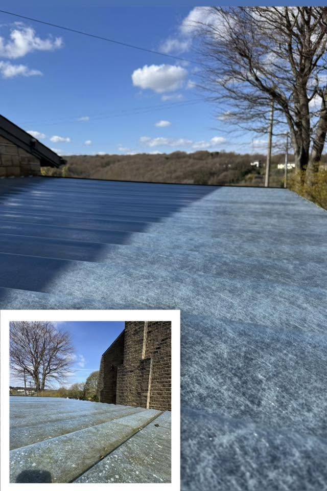
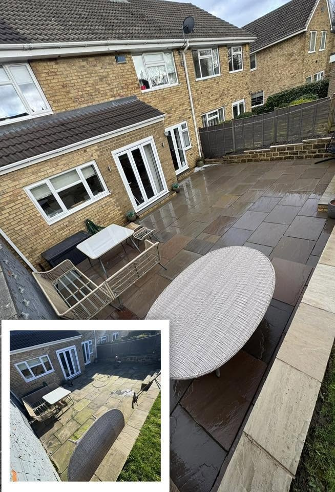
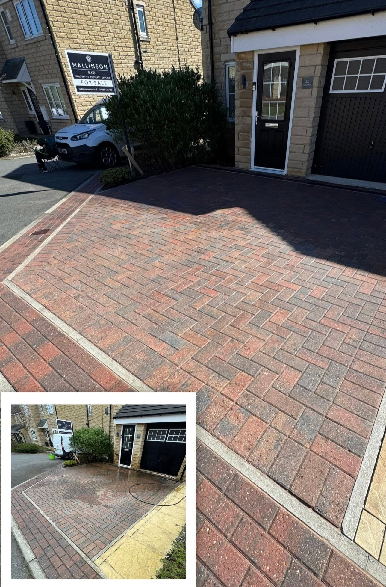
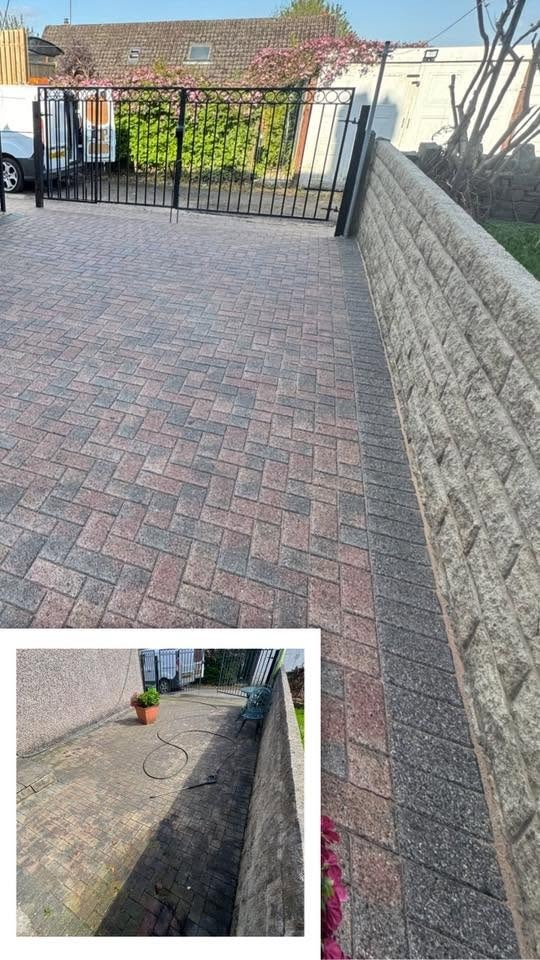
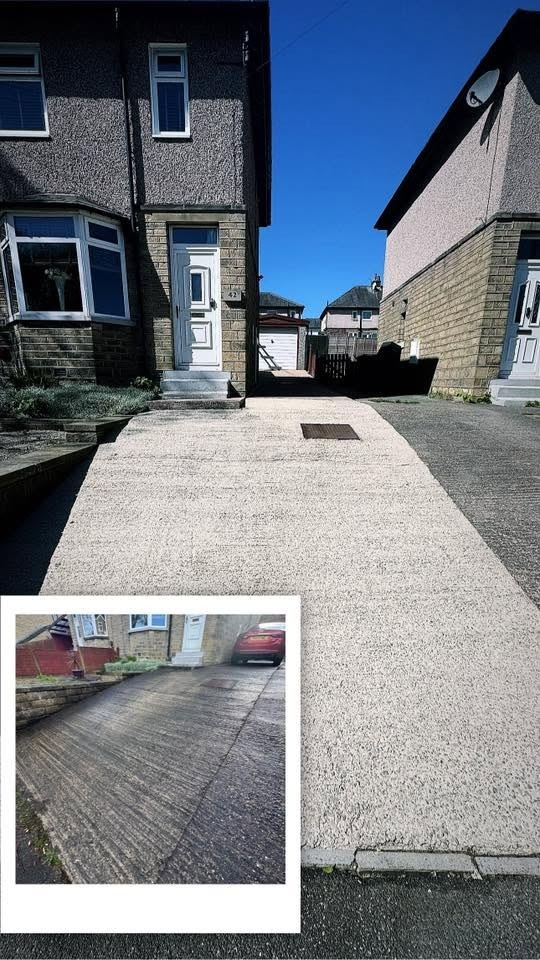
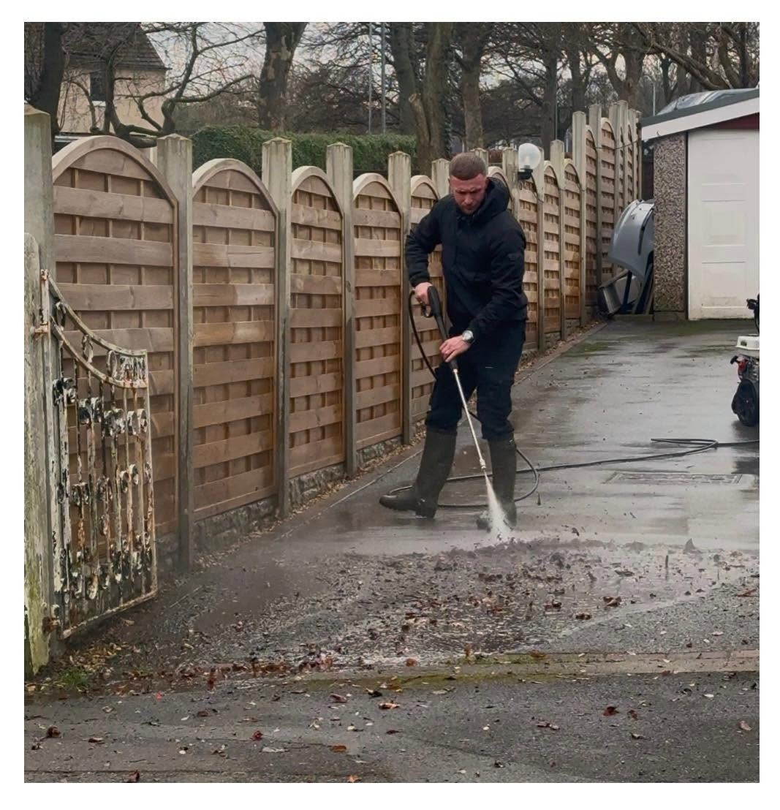

Pressure WashingPatios, driveways and hard surfaces
YORKSHIRE · EXTERIOR CLEANING
Clean it. Don't replace it.
Bring patios, paving and natural stone back to life with careful pressure washing, soft washing and treatments.
Pressure WashingSoft WashingStone CleaningTreatments
Soft WashingCareful cleaning suited to the surface
Stone CleaningIndian sandstone and Yorkshire stone
TreatmentsRestoring and caring for stone finishes
STONE CLEANING
Bring the colour back to the stone.
Natural stone can fade and dull over time. Rivers' supplied before-and-after examples show the difference careful cleaning makes to Indian sandstone, Yorkshire stone and paved outdoor spaces.
Ask about your stone →
PATIOS & PAVING
A cleaner place to spend time outside.
From a sandstone patio to a block-paved driveway, exterior cleaning can lift the appearance of the whole property. The supplied project images keep the original before views alongside the finished surfaces.
Discuss a clean →

REAL RESULTS
The difference is in the detail.
Supplied Rivers Exterior Cleaning project images. Before-and-after images are displayed whole, alongside the cleaning work in progress.



BEFORE & AFTER
Don't guess what a clean could change.
These supplied result images include the before views within each photograph. See the paving and stone surfaces together with their cleaned finish.
Get a cleaning quote →YORKSHIRE BORN & PROUD
Care for the surface you already have.
Rivers Exterior Cleaning focuses on pressure washing, soft washing, natural stone cleaning and treatments. The supplied work shows patios, driveways and walls with a clear change after cleaning.
01
Pressure washing
Cleaning outdoor hard surfaces and paving.
02
Natural stone
Indian sandstone and Yorkshire stone cared for with attention to detail.
03
Visible results
See the supplied before-and-after project images.
REQUEST A QUOTE
Tell Rivers what needs cleaning.
Complete the form and WhatsApp opens with your details ready to send. This is a quote request, not a confirmed booking.